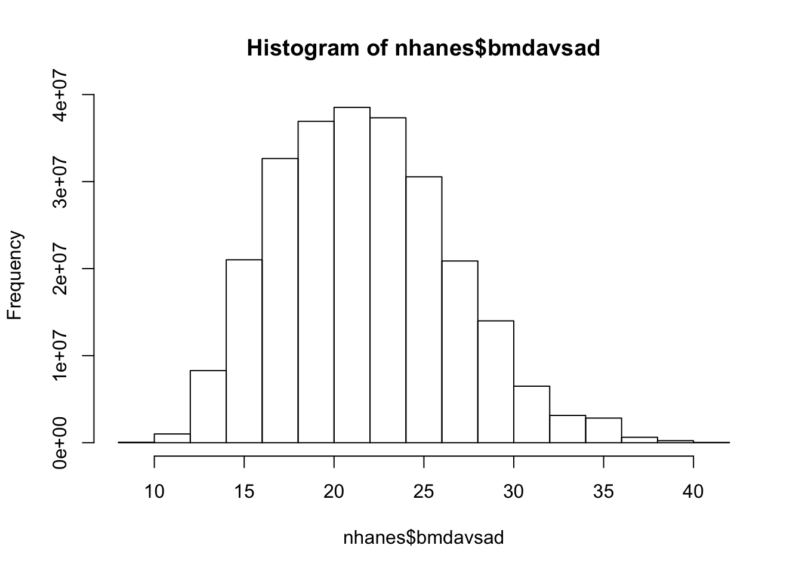
STAT472_Hw6
Homework 6 STAT 472: Sampling Theory & Practice
Problem 1.
Use the data in file nhanes (see description and example in chapter 7 slides pages 26-30) for this exercise. The sagittal abdominal diameter (variable bmdavsad), measures the distance from the small of the back to the upper abdomen.
(a) Draw a histogram of bmdavsad, using the weights. Do the data appear to be normally distributed?
Overall, the data appears to be normally distributed. The weighted histogram is slightly right skewed, but overall it is approximately normally distributed.
(b) Estimate the mean value of bmdavsad for the domain of adults age 20 and over, along with a 95% CI.
[1] 0[1] 5406# A tibble: 6 × 6
sdmvstra sdmvpsu wtint2yr wtmec2yr bmxbmi age20d
<dbl> <dbl> <dbl> <dbl> <dbl> <dbl>
1 125 1 134671. 135630. 27.8 1
2 125 1 24329. 25282. 30.8 1
3 131 1 12400. 12576. 28.8 1
4 131 1 102718. 102079. 42.4 1
5 126 2 17628. 18235. 20.3 1
6 128 1 11252. 10879. 28.6 1Stratified 1 - level Cluster Sampling design (with replacement)
With (30) clusters.
subset(d0709, age20d == 1)[1] 15 mean SE DEff
bmxbmi 29.3891 0.2532 7.1248 2.5 % 97.5 %
bmxbmi 28.84942 29.92878The mean BMI for adults aged 20 and over is **29.39**, with a 95% confidence interval of [28.85, 29.93].
(c) Find the minimum, 25th, 50th, and 75th percentiles, and maximum of bmdavsad. Calculate the same quantities separately for each gender (variable riagendr). Use these to construct side-by-side boxplots of the data as in Figure 7.6.
0% 25% 50% 75% 100%
9.6 17.1 20.4 24.3 39.7 0% 25% 50% 75% 100%
10.8 17.9 21.3 24.9 40.8 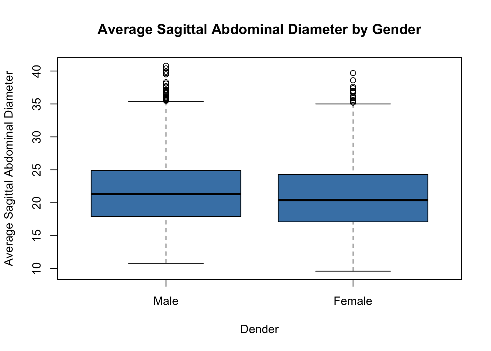
The boxplots demonstrate evidence that female individuals tend to have very slightly lower average saggital abdominal diameters compared to male individuals, but the range and mean are extremely similar overall.
(d) Construct a weighted bubble plot with smoothed trend line for y = bmdavsad and x = bmxbmi. Does there appear to be a linear relationship? What other features do you see in the data?

In the graph there appears to be a linear relationship with a positive slope. At the right end of the graph the trend line appears to drop off or decrease in slope and turn negative. however, this may be because of another feature in the data, which is that as the values become more spread out as the average SAD and as the BMI increases, and the values have less variation from the trend line when they are smaller.
In practical terms this may provide evidence that individuals with higher SADs may have a wider range of BMI, and people with a higher BMI may have a wider range of SADS, compared to people with lower values of those variables.
Problem 2.
Kosmin and Lachman (1993) had a question on religious affiliation included in 56 consecutive weekly household surveys; the subject of household surveys varied from week to week from cable TV use, to preference for consumer items, to political issues. After four callbacks, the unit nonresponse rate was 50%; an additional 2.3% refused to answer the religion question. The authors say: Nationally, the sheer number of interviews and careful research design resulted in a high level of precision. Standard error estimates for our overall national sample show that we can be 95% confident that the figures we have obtained have an error margin, plus or minus, of less than 0.2%.
This means, for example, that we are more than 95% certain that the figure for Catholics is in the range of 25.0% to 26.4% for the U.S. population …
(a) Critique the preceding statement.
“Standard error estimates for our overall national sample show that we can be 95% confident that the figures we have obtained have an error margin, plus or minus, of less than 0.2%.” This is a width of 0.4, the width of the interval given is 26.4-25=1.4. This is larger than the actual range provided with 95% confidence, so it can’t be true.
(b) If you anticipated item nonresponse, do you think it would be better to insert the question of interest in different surveys each week, as was done here, or to use the same set of additional questions in each survey? Explain your answer. How would you design an experiment to test your conjecture?
For this survey, a nonresponse bias might look like the people who are not responding to the survey also being more likely to be atheistic or non-Catholic specifically. Conversely, it may also appear as the opposite, where people who are less likely to respond to the survey are more likely to be religious or Catholic specifically. In either case, this would probably be tied to the high emotions and stakes of religious topics. Because of this, I think it would be best to include the relevant question into different surveys every week. With this method, if anyone is turned off because of the polarizing topic, then there will be a chance that won’t happen until the second or third survey they take, increasing the response rate. It may also make them more likely to continue taking surveys because it doesn’t focus on the topic of religion specifically.
If I were to design an experiment to test this conjecture, that it would be preferable to include the question only in some surveys, I would focus on getting two groups of individuals that are internally diverse, but are similar to each other between groups. This would suit cluster sampling very well, so it could be based off of natural geographic separations. Then, the two separate methods could be applied to each group and the response rate could be measured and compared. Additionally, I would make sure to conduct the survey through in-person method rather than over the phone, as this can increase response rates.
Problem 3.
Gnap (1995) conducted a survey on teacher workload which was used in Exercise 15 of Chapter 5.
(a) The original survey was intended as a one-stage cluster sample. What was the overall response rate?
The nonresponse rate rate is: \(\text{nonresponse}=\frac{\text{nonrespondents+unresolved}}{\text{N-ineligible}}\). The response rate will be 100% minus this value.
The denominator is the number of individuals who were eligible for the study, minus any ineligible cases, 310+26=336. This is the number of respondents plus the number of nonrespondents. The numerator is the number of nonrespondents plus the number of results in the respondents that have no information and unresolved cases, 26+4=30. This is the number of nonrespondents plus the number of respondents whose values are NA.
The final formula for the nonresponse rate is: \(\text{nonresponse}=\frac{30}{336}=0.08929\approx8.9\%\).
Consequently, the response rate will be: \(100\%-8.9\%=91\%\)
(b) Would you expect nonresponse bias in this study? If so, in which direction would you expect the bias to be? Which teachers do you think would be less likely to respond to the survey?
Nonresponse bias occurs when the individuals who don’t respond to the survey are systemically different from the respondents. Teachers might be less likely to response to the survey if they have a particularly high workload, if they are stressed out, or if they have other personal or medical issues. The nonresponse may be a direct result of the nonrespondent’s higher workload, or it may be due to related factors. Specifically, if a teacher has only a slightly higher than average workload but they also have personal problems that overall higher effort they’re putting into their life may prevent them from submitting the survey, so overall teachers with higher than average workloads may tend to not respond. Therefore, I expect there to be a nonresponse bias, specifically one that tend to systemically weed out teachers with higher workloads, skewing the data to make it seem like the average workload of a teacher is lower than it actually is.
(c) Gnap also collected data on a random subsample of the nonrespondents in the “large” stratum, in file teachnr.dat. How do the respondents and nonrespondents differ?
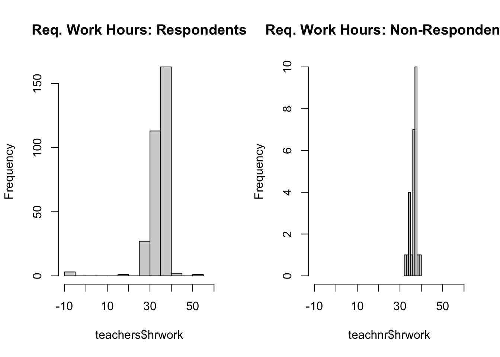
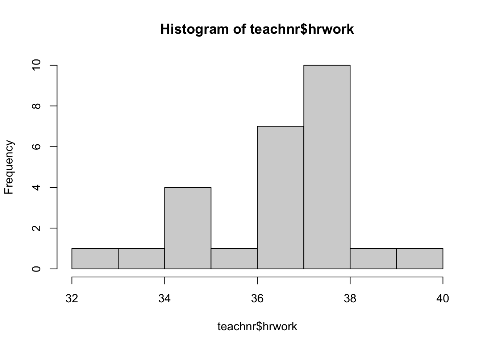
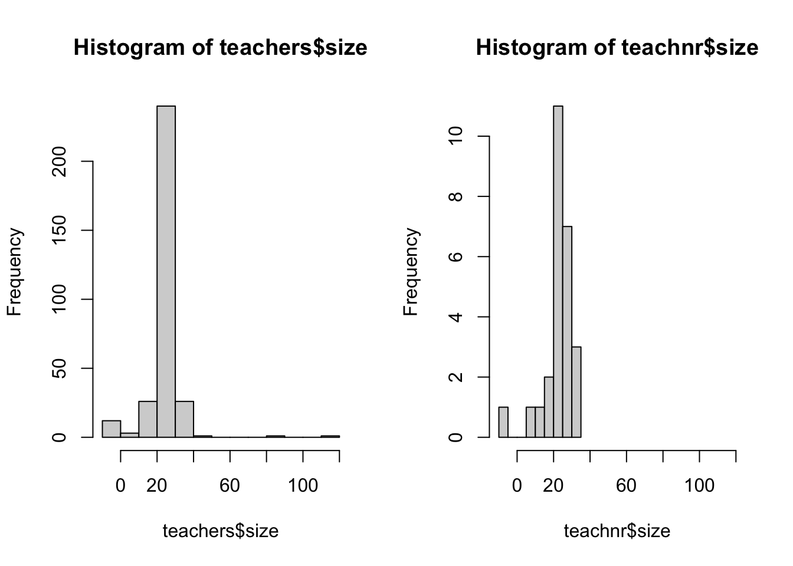

Warning in chisq.test(contingency_table): Chi-squared approximation may be
incorrect
Pearson's Chi-squared test
data: contingency_table
X-squared = 49.61, df = 28, p-value = 0.007146
Fisher's Exact Test for Count Data with simulated p-value (based on
2000 replicates)
data: comb.data$response and comb.data$size
p-value = 0.009995
alternative hypothesis: two.sidedWarning in chisq.test(contingency_table): Chi-squared approximation may be
incorrect
Pearson's Chi-squared test
data: contingency_table
X-squared = 94.165, df = 48, p-value = 7.799e-05Warning in chisq.test(contingency_table): Chi-squared approximation may be
incorrect
Pearson's Chi-squared test
data: contingency_table
X-squared = 67.557, df = 36, p-value = 0.001119 hrwork size preprmin assist
mean_teachers 34.499677 24.57742 163.4226 76.99194
var_teachers 29.499304 104.05709 14000.6202 35337.65770
mean_teachnr 36.463462 23.61538 160.1923 152.30769
var_teachnr 2.614312 68.96615 3436.9615 49314.46154The histograms of each variable show that the data of the respondents tends to have a significantly higher range, and they tend to have much higher values on the higher end of the range. The Chi-squared and Fishers test show low p values which provide evidence that there is some difference between the groups, but this may be incorrect.
(d) Is there evidence of nonresponse bias, when you compare the subsample of nonrespondents to the respondents in the original survey?
There is little evidence that the respondents and nonrespondents differ in statistically significant ways. Specifically, the means and shapes of the distributions of each shared variable are very similar, so there is no evidence of significant differences between the two groups. There were numerical tests that provided some evidence, but I think this is incorrect due to the small cell size counts. Overall, there is not enough evidence to confirm a difference in the subsamples of nonrespondents to the subsample of respondents.
(e) Use an appropriate imputation method for the missing values in teachnr.dat, then calculate the means and variances for the four variables again, compare to the results from (c).
hrwork size preprmin assist
0 1 0 0 hrwork size preprmin assist
0 0 0 0 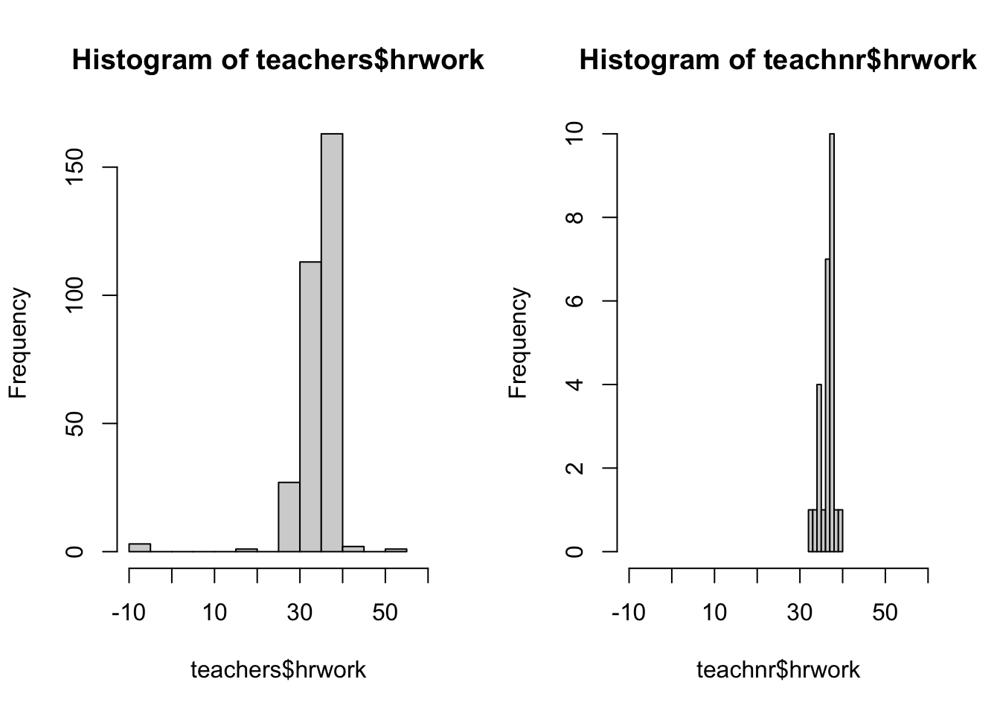

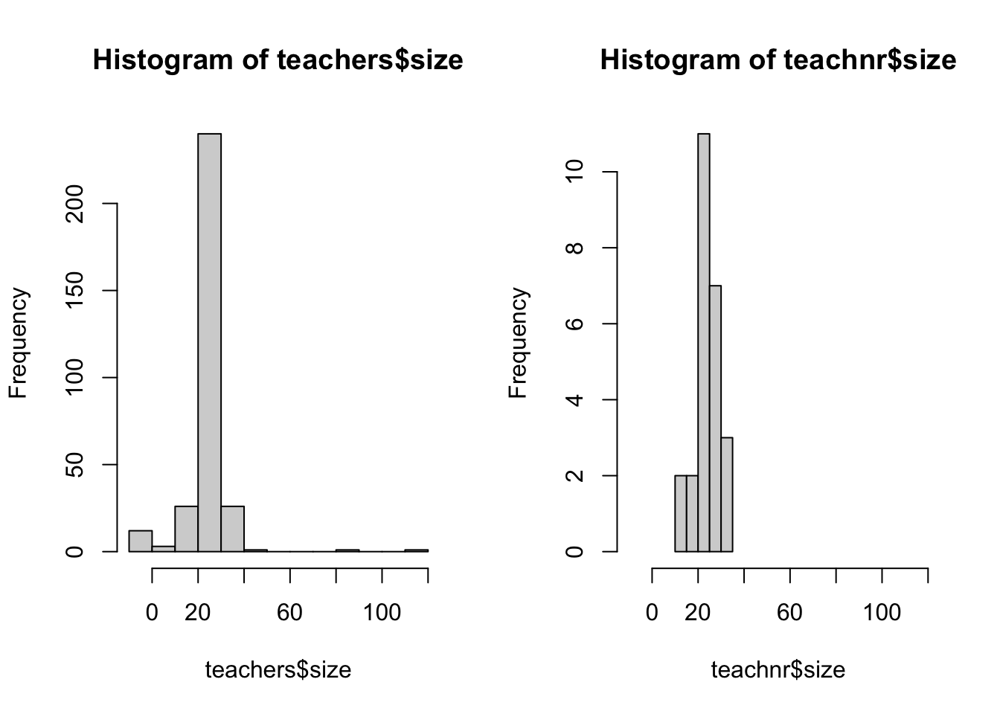
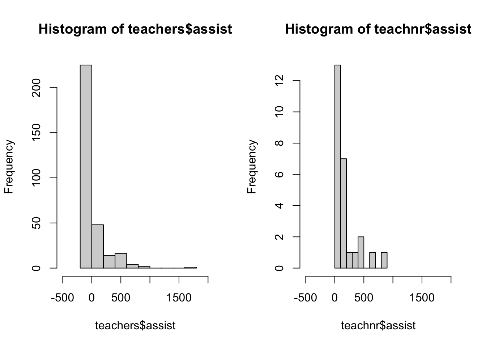
Warning in chisq.test(contingency_table): Chi-squared approximation may be
incorrect
Pearson's Chi-squared test
data: contingency_table
X-squared = 49.61, df = 28, p-value = 0.007146
Fisher's Exact Test for Count Data with simulated p-value (based on
2000 replicates)
data: comb.data$response and comb.data$size
p-value = 0.01049
alternative hypothesis: two.sidedWarning in chisq.test(contingency_table): Chi-squared approximation may be
incorrect
Pearson's Chi-squared test
data: contingency_table
X-squared = 94.165, df = 48, p-value = 7.799e-05Warning in chisq.test(contingency_table): Chi-squared approximation may be
incorrect
Pearson's Chi-squared test
data: contingency_table
X-squared = 67.557, df = 36, p-value = 0.001119 hrwork size preprmin assist
mean_teachers 34.499677 24.57742 163.4226 76.99194
var_teachers 29.499304 104.05709 14000.6202 35337.65770
mean_teachnr 36.463462 NA 160.1923 152.30769
var_teachnr 2.614312 NA 3436.9615 49314.46154The results are extremely similar from part c because there was only one missing value within the dataset, so it didn’t alter the overall results much.
(f) Use an appropriate imputation methods for the missing values in teachers.dat, then calculate the means and variances for the four variables again, compare to the results from (c).
dist school hrwork size preprmin assist
0 0 3 12 0 0 dist school hrwork size preprmin assist
0 0 0 0 0 0 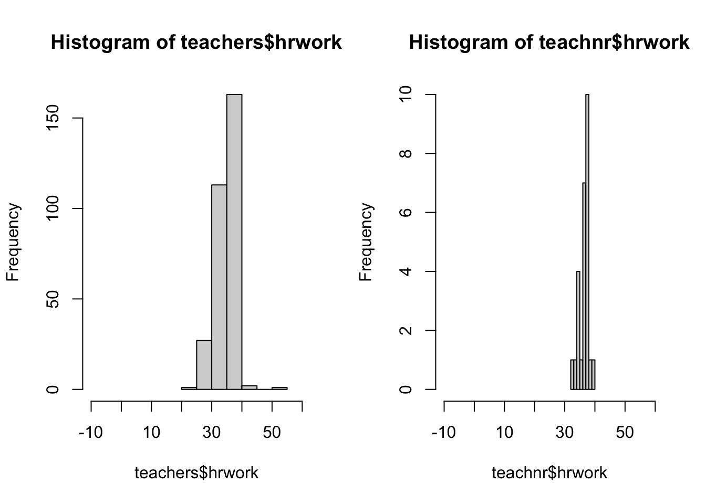
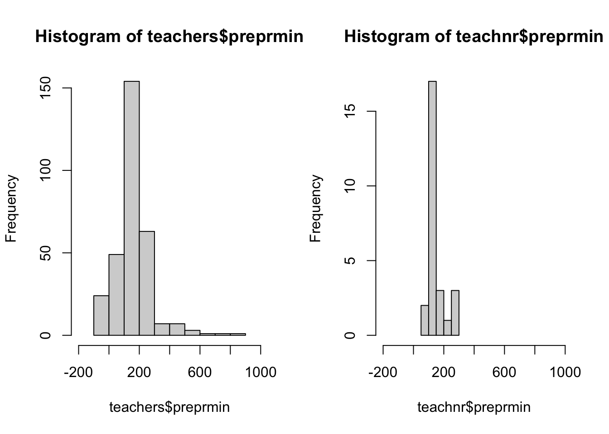
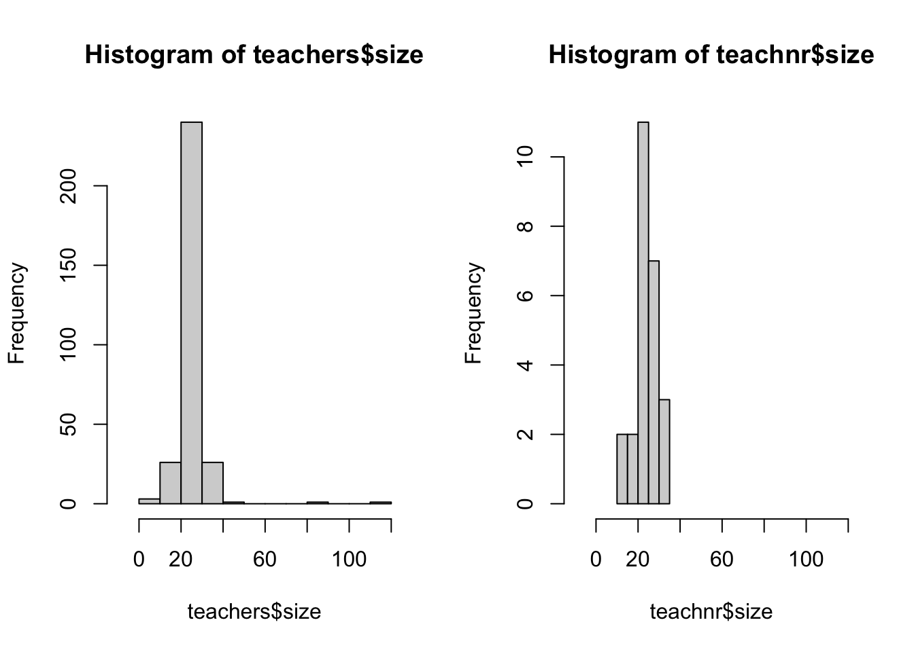

Warning in chisq.test(contingency_table): Chi-squared approximation may be
incorrect
Pearson's Chi-squared test
data: contingency_table
X-squared = 49.61, df = 28, p-value = 0.007146
Fisher's Exact Test for Count Data with simulated p-value (based on
2000 replicates)
data: comb.data$response and comb.data$size
p-value = 0.009995
alternative hypothesis: two.sidedWarning in chisq.test(contingency_table): Chi-squared approximation may be
incorrect
Pearson's Chi-squared test
data: contingency_table
X-squared = 94.165, df = 48, p-value = 7.799e-05Warning in chisq.test(contingency_table): Chi-squared approximation may be
incorrect
Pearson's Chi-squared test
data: contingency_table
X-squared = 67.557, df = 36, p-value = 0.001119 hrwork size preprmin assist
mean_teachers NA NA 163.4226 76.99194
var_teachers NA NA 14000.6202 35337.65770
mean_teachnr 36.463462 NA 160.1923 152.30769
var_teachnr 2.614312 NA 3436.9615 49314.46154The results are extremely similar from part c overall. The means and variances remain similar, as do the graphs of the histograms. There is still little evidence to suggest a nonresponse bias.
Resources Used:
https://www.sciencedirect.com/topics/nursing-and-health-professions/nonresponse-bias
https://stackoverflow.com/questions/21219447/calculating-percentile-of-dataset-column
https://search.r-project.org/CRAN/refmans/SDAResources/html/nhanes.html
https://www.rdocumentation.org/packages/SDAResources/versions/0.1.1/topics/nhanes
Code Appendix:
pacman::p_load(survey, weights, SDAResources, nrba, dplyr)
data(nhanes)
#hist(nhanes$bmdavsad)
# x is the data, weight is the vector of weights
wtd.hist(nhanes$bmdavsad, weight = nhanes$wtint2yr)
nhanesnew<-nhanes #copy nhanes as nhanesnew, since we want to create a new column
#dataframe for the domain of adults age 20 and over
nhanesnew <- subset(nhanesnew, ridageyr >= 20)
#the following code is from the chapter 7 class notes
nhanes$age20d<-rep(0,nrow(nhanes))
nhanes$age20d[nhanes$ridageyr >=20 & !is.na(nhanes$bmxbmi)]<-1
# check missing value counts for new variables
sum(is.na(nhanes$age20d))
sum(nhanes$age20d) # how many records in domain?
head(nhanes[, c(1:4, 15, 26)])
# stratified cluster design
d0709 <- svydesign(id = ~sdmvpsu, strata=~sdmvstra,
weights=~wtmec2yr, nest=TRUE, data = nhanes)
# domain estimation, age20+
d0709sub<-subset(d0709, age20d ==1)
d0709sub
## Stratified 1 - level Cluster Sampling design (with replacement)
## With (30) clusters.
## subset(d0709, age20d == 1)
# Request means and design effects
nhmeans<-svymean(~bmxbmi, d0709sub, deff=TRUE)
degf(d0709sub)
## [1] 15
nhmeans
## mean SE DEff
## bmxbmi 29.3891 0.2532 7.1248
confint(nhmeans,df=degf(d0709sub))
# Source - https://stackoverflow.com/a/21219821
# Posted by Roman Luštrik
# Retrieved 2026-04-28, License - CC BY-SA 3.0
# Omit missing values of bmxbmi
nhanes <- subset(nhanes, !is.na(bmdavsad))
#Filter nhanes by female gender and calculate percentiles of bmdavsad
nhanesf <- nhanes
nhanesf <- subset(nhanesf, riagendr == 2)
quantile(nhanesf$bmdavsad, probs = c(0, 0.25, 0.5, 0.75, 1)) # quartile
#Filter nhanes by male gender and calculate percentiles of bmdavsad
nhanesm <- nhanes
nhanesm <- subset(nhanesm, riagendr == 1)
quantile(nhanesm$bmdavsad, probs = c(0, 0.25, 0.5, 0.75, 1)) # quartile
nhanes$riagendr <- factor(nhanes$riagendr)
#side-by-side boxplots of the data
boxplot(nhanes$bmdavsad ~ nhanes$riagendr,
col='steelblue',
main='Average Sagittal Abdominal Diameter by Gender',
xlab='Dender',
ylab='Average Sagittal Abdominal Diameter',
names = c("Male", "Female"))
# The following code is from chapter 7 class notes
### Smoothed trend line for mean
# Smoothed trend line with bubble plot of BMI versus age
# plot data bmxbmi~ridageyr
par(las=1) # make tick mark labels horizontal
svyplot(bmdavsad~bmxbmi, design=d0709, style="bubble",
basecol="gray",inches=0.03,
ylab="Average Sagittal Abdominal Diameter",xlab="Body Mass Index",
xlim=c(10,70),ylim=c(0,50),
main="Smoothed trend line with bubble plot of BMI versus age")
# plot smoothing trend line
# library(KernSmooth) # install and load the package
smth<-svysmooth(bmdavsad~bmxbmi,d0709)
lines(smth,lwd=2)
teachers <- read.table("~/Downloads/CSV data sets for SDA 3e/teachers.csv", header = TRUE, sep = ",")
teachnr <- read.table("~/Downloads/CSV data sets for SDA 3e/teachnr.csv", header = TRUE, sep = ",")
comb.data <- bind_rows(teachers,teachnr)
comb.data$response <- rep(0,nrow(comb.data))
comb.data$response[!is.na(comb.data$dist)] <- 1
# Convert numeric codes (e.g., 1, 2) to a factor with labels
comb.data$response <- factor(comb.data$response,
levels = c(1, 0),
labels = c("Respondent", "Nonrespondent"))
# Histograms of the data for each dataset, the respondents and nonrespondents
par(mfrow=c(1, 2))
hist(teachers$hrwork, xlim=c(-10, 60), main = "Req. Work Hours: Respondents")
hist(teachnr$hrwork, xlim=c(-10, 60), main = "Req. Work Hours: Non-Respondents")
par(mfrow=c(1, 2))
hist(teachers$preprmin, xlim=c(-200, 1000))
hist(teachnr$preprmin, xlim=c(-200, 1000))
par(mfrow=c(1, 2))
hist(teachers$size, xlim=c(-10, 120))
hist(teachnr$size, xlim=c(-10, 120))
par(mfrow=c(1, 2))
hist(teachers$assist, xlim=c(-500, 2000))
hist(teachnr$assist, xlim=c(-500, 2000))
# Create a contingency table
contingency_table <- table(comb.data$response, comb.data$size)
# Perform the Chi-Square test
chisq.test(contingency_table)
# Use Fisher's test for small samples
fisher.test(comb.data$response, comb.data$size, simulate.p.value=TRUE)
# Create a contingency table
contingency_table <- table(comb.data$response, comb.data$preprmin)
# Perform the Chi-Square test
chisq.test(contingency_table)
# Create a contingency table
contingency_table <- table(comb.data$response, comb.data$assist)
# Perform the Chi-Square test
chisq.test(contingency_table)
#Calculating means and variances
# (excluding first 2)
teachers_cols <- 3:6
#(no columns to exclude)
teachnr_cols <- 1:4
result <- sapply(seq_along(teachers_cols), function(i) {
c(mean_teachers = mean(teachers[, teachers_cols[i]]),
var_teachers = var(teachers[, teachers_cols[i]]),
mean_teachnr = mean(teachnr[, teachnr_cols[i]]),
var_teachnr = var(teachnr[, teachnr_cols[i]]))
})
colnames(result) <- c("hrwork", "size", "preprmin", "assist")
print(result)
#ex.data<- merge(teachers,teachmi,by=c("dist","school"))
teachnr$size <- replace(teachnr$size, teachnr$size < 0, NA)
sapply(teachnr, function(x) sum(is.na(x)))
# For all columns in a dataset
ex.data_imputed <- teachnr
for(i in 1:ncol(ex.data_imputed)) {
if(is.numeric(ex.data_imputed[[i]])) {
ex.data_imputed[[i]][is.na(ex.data_imputed[[i]])] <- mean(ex.data_imputed[[i]], na.rm = TRUE)
}
}
# Count missing values in each column
sapply(ex.data_imputed, function(x) sum(is.na(x)))
# Histograms of the data for each dataset, the respondents and nonrespondents
par(mfrow=c(1, 2))
hist(teachers$hrwork, xlim=c(-10, 60))
hist(teachnr$hrwork, xlim=c(-10, 60))
par(mfrow=c(1, 2))
hist(teachers$preprmin, xlim=c(-200, 1000))
hist(teachnr$preprmin, xlim=c(-200, 1000))
par(mfrow=c(1, 2))
hist(teachers$size, xlim=c(-10, 120))
hist(teachnr$size, xlim=c(-10, 120))
par(mfrow=c(1, 2))
hist(teachers$assist, xlim=c(-500, 2000))
hist(teachnr$assist, xlim=c(-500, 2000))
# Create a contingency table
contingency_table <- table(comb.data$response, comb.data$size)
# Perform the Chi-Square test
chisq.test(contingency_table)
# Use Fisher's test for small samples
fisher.test(comb.data$response, comb.data$size, simulate.p.value=TRUE)
# Create a contingency table
contingency_table <- table(comb.data$response, comb.data$preprmin)
# Perform the Chi-Square test
chisq.test(contingency_table)
# Create a contingency table
contingency_table <- table(comb.data$response, comb.data$assist)
# Perform the Chi-Square test
chisq.test(contingency_table)
#Calculating means and variances
# (excluding first 2)
teachers_cols <- 3:6
#(no columns to exclude)
teachnr_cols <- 1:4
result <- sapply(seq_along(teachers_cols), function(i) {
c(mean_teachers = mean(teachers[, teachers_cols[i]]),
var_teachers = var(teachers[, teachers_cols[i]]),
mean_teachnr = mean(teachnr[, teachnr_cols[i]]),
var_teachnr = var(teachnr[, teachnr_cols[i]]))
})
colnames(result) <- c("hrwork", "size", "preprmin", "assist")
print(result)
teachers$hrwork <- replace(teachers$hrwork, teachers$hrwork < 0, NA)
teachers$size <- replace(teachers$size, teachers$size < 0, NA)
teachers$preprmin <- replace(teachers$preprmin, teachers$perprmin < 0, NA)
sapply(teachers, function(x) sum(is.na(x)))
# For all columns in a dataset
ex.data_imputed <- teachers
for(i in 1:ncol(ex.data_imputed)) {
if(is.numeric(ex.data_imputed[[i]])) {
ex.data_imputed[[i]][is.na(ex.data_imputed[[i]])] <- mean(ex.data_imputed[[i]], na.rm = TRUE)
}
}
# Count missing values in each column
sapply(ex.data_imputed, function(x) sum(is.na(x)))
# Histograms of the data for each dataset, the respondents and nonrespondents
par(mfrow=c(1, 2))
hist(teachers$hrwork, xlim=c(-10, 60))
hist(teachnr$hrwork, xlim=c(-10, 60))
par(mfrow=c(1, 2))
hist(teachers$preprmin, xlim=c(-200, 1000))
hist(teachnr$preprmin, xlim=c(-200, 1000))
par(mfrow=c(1, 2))
hist(teachers$size, xlim=c(-10, 120))
hist(teachnr$size, xlim=c(-10, 120))
par(mfrow=c(1, 2))
hist(teachers$assist, xlim=c(-500, 2000))
hist(teachnr$assist, xlim=c(-500, 2000))
# Create a contingency table
contingency_table <- table(comb.data$response, comb.data$size)
# Perform the Chi-Square test
chisq.test(contingency_table)
# Use Fisher's test for small samples
fisher.test(comb.data$response, comb.data$size, simulate.p.value=TRUE)
# Create a contingency table
contingency_table <- table(comb.data$response, comb.data$preprmin)
# Perform the Chi-Square test
chisq.test(contingency_table)
# Create a contingency table
contingency_table <- table(comb.data$response, comb.data$assist)
# Perform the Chi-Square test
chisq.test(contingency_table)
#Calculating means and variances
# (excluding first 2)
teachers_cols <- 3:6
#(no columns to exclude)
teachnr_cols <- 1:4
result <- sapply(seq_along(teachers_cols), function(i) {
c(mean_teachers = mean(teachers[, teachers_cols[i]]),
var_teachers = var(teachers[, teachers_cols[i]]),
mean_teachnr = mean(teachnr[, teachnr_cols[i]]),
var_teachnr = var(teachnr[, teachnr_cols[i]]))
})
colnames(result) <- c("hrwork", "size", "preprmin", "assist")
print(result)